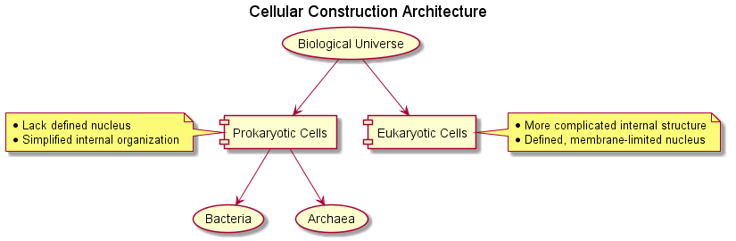

PlantUML to the Rescue
PlantUML has always been the diagramming tool that I was looking for. I am a visual person and
the ability to put my thoughts into diagrams is much easier now. I ran into PlantUML while
developing software in PyCharm. I was in the middle of understanding a large scale Python
code-base and needed a visualization tool to take notes and get the big picture of
the design of the library.
Example 1
@startuml
''top to bottom direction
:Mind: as A
:Body: as B
left to right direction
A -- B
A .. B
newpage
A -left-> B
B -up-> (C)
(C) ..> A
@enduml

Example 2
@startuml
title Cellular Construction Architecture
(Biological Universe) as BiologicalUniverse
(Bacteria) as B
(Archaea) as A
[Prokaryotic Cells] as PC
note as PCN
*Lack defined nucleus
*Simplified internal organization
end note
PC .l. PCN
[Eukaryotic Cells] as EC
note as ECN
*More complicated internal structure
*Defined, membrane-limited nucleus
end note
EC .r. ECN
top to bottom direction
BiologicalUniverse -d-> PC
BiologicalUniverse -d-> EC
PC -down-> B
PC -down-> A
@enduml

Links
- Website
- JetBrains Plugin